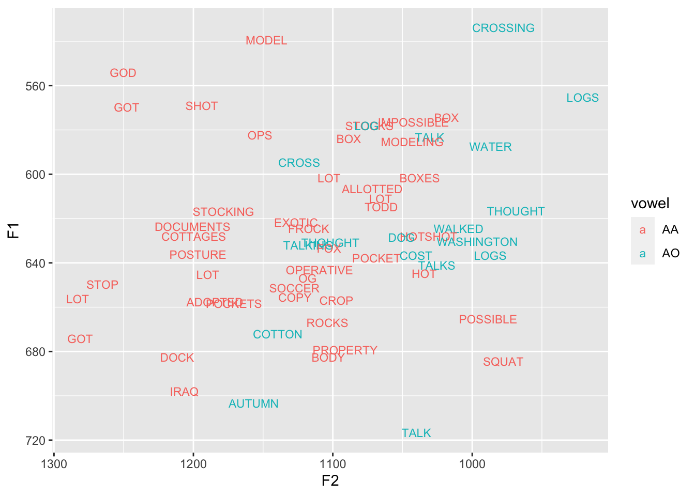
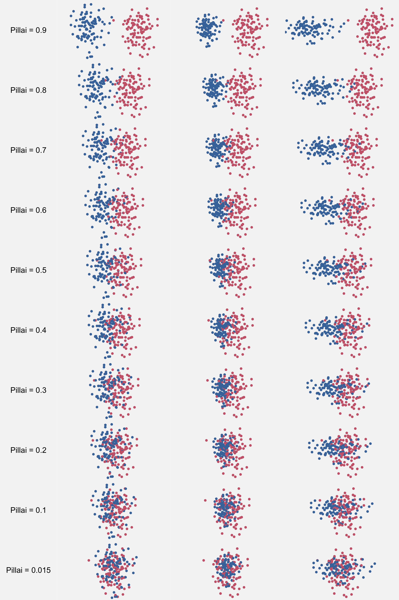
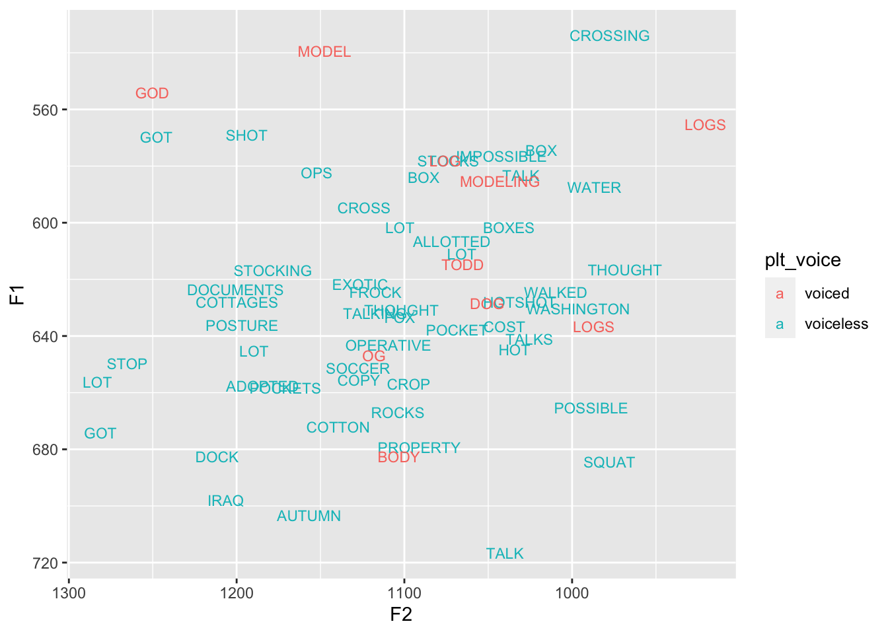
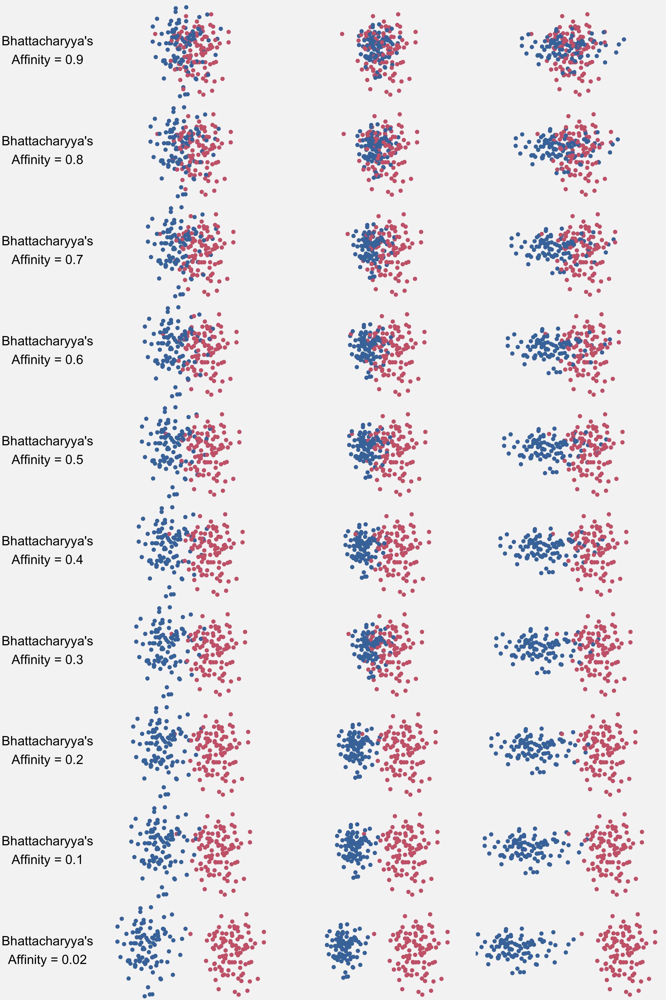

library(tidyverse)
Note
Please be aware that in the 2023 revision to this tutorial, some of the exact numbers changed because I’m using a slightly different dataset. There was also a very slight change in the SpatialPointsDataFrame function. Otherwise everything should work fine.
In the past two days, I’ve had four people ask about the Pillai score or Bhattacharyya’s Affinity. What does it mean, how is it calculated, and how do you get it in R? I figure if there’s a need for a clear tutorial on these two measurements, perhaps I should go ahead and write one.
In the past, I’ve done tutorial on visualizing vowel data (part 1 and part 2) and on extracting vowel formants in Praat. Calculating vowel overlap seems to be the next logical step. I’ve got a couple others in the works too, so stay tuned.
When putting this together, I was surprised at how much I had to say. As it turns out, getting the Pillai score and the Bhattacharyya’s Affinity isn’t perfectly straightforward, especially if you want to do it for all your speakers individually. The techniques in this tutorial cover a wide range of R skills, ranging from relatively basic stuff to more advanced things. So, to keep this post as light as possible, I’ve moved all non-essential topics to Part 2. By the end of this one, you’ll be able to get these measures in your own data. If you find it to be buggy, you want to learn more, or you have some additional R background, try looking at the next one too.
I’ll also say that this is not the first tutorial on calculating these measurements in R. Lauren Hall-Lew has already provided some R code in her 2010 paper. Dan Johnson has code for Bhattacharyya’s Affinity in his 2015 NWAV presentation. And Chris Strelluf’s new 2018 volume comes with the code used for his analysis as well. Hopefully this tutorial will provide some additional clarity in a way that complements what others have done.
Note
Update (November 23, 2021) Sprinkled throughout this blog post are updates based on some recent research that Betsy Sneller and I have done. Please see the summary our ASA2021 poster and our JASA paper for more information.
Data prep
As always, I’ll be using tidyverse code to read in, process, and plot the data. Remember that this is a bit of an umbrella package that includes dplyr, tidyr, and ggplot2, which you might be more familiar with.
And I’ll use the same dataset that I’ve used in other tutorials. It’s a bunch of formant measurements of me reading about 300 sentences while sitting at my kitchen counter. The audio was automatically transcribed and processed with DARLA. As part of the process, it was processed with FAVE-extract, so the output file is just like what yours might look like if you also used FAVE. Hopefully this makes this tutorial the most translatable to your own data.
my_vowels_raw <- read_csv("../../data/joey.csv", show_col_types = FALSE) %>%
print()# A tibble: 3,504 × 43
name sex vowel stress pre_word word fol_word F1 F2 F3
<chr> <chr> <chr> <dbl> <chr> <chr> <chr> <dbl> <dbl> <chr>
1 LA000-Joey M AY 1 THE THAI SP 826 1520. 2529.5
2 LA000-Joey M AY 1 SP TIMER SP 581. 1306 1835.6
3 LA000-Joey M ER 0 SP TIMER SP 484. 1449. 1644.6
4 LA000-Joey M IY 1 SP HERE WE'LL 235. 2044. 3106.3
5 LA000-Joey M IY 1 HERE WE'LL SP 302. 1974. 2549.5
6 LA000-Joey M AA 1 SP BARRING INJURY 573. 925. 2296.1
7 LA000-Joey M IH 1 BARRING INJURY OR 362. 2262. 2591.2
8 LA000-Joey M IY 0 BARRING INJURY OR 258. 2222. 3197.5
9 LA000-Joey M ER 0 INJURY OR A 370. 872. 1654.5
10 LA000-Joey M EY 1 A CHANGE OF 428. 2210. 2531.2
# ℹ 3,494 more rows
# ℹ 33 more variables: F1_LobanovNormed_unscaled <dbl>,
# F2_LobanovNormed_unscaled <dbl>, B1 <dbl>, B2 <dbl>, B3 <chr>, t <dbl>,
# beg <dbl>, end <dbl>, dur <dbl>, plt_vclass <chr>, plt_manner <chr>,
# plt_place <chr>, plt_voice <chr>, plt_preseg <chr>, plt_folseq <chr>,
# pre_seg <chr>, fol_seg <chr>, context <chr>, vowel_index <dbl>,
# pre_word_trans <chr>, word_trans <chr>, fol_word_trans <chr>, …Now, I’d like to simplify this dataset a little bit.
I’ll just focus on stressed vowels, so I’ll remove unstressed vowels with
filter.I don’t need all the FAVE output for this tutorial, so I’ll use
selectto keep only the columns I need. Most notably here, I’m only keeping the midpoint measurements (F1@50%andF2@50%).But, because those column names are slightly cumbersome to type, I’ll go ahead and rename them simply
F1andF2usingrename.Finally, there’s only one speaker here (me), but I want to show how to do this across all speakers in your sample, so I’ll go ahead and add a
fake_speakercolumn that randomly assigns rows the speaker name “Joey” or “Stanley”. Fortunately I have a first name for a last name so this isn’t too weird of a result.
my_vowels <- my_vowels_raw %>%
filter(stress == 1) %>%
select(vowel, word, dur, `F1@50%`, `F2@50%`, fol_seg, plt_manner, plt_place, plt_voice) %>%
rename(F1 = `F1@50%`, F2 = `F2@50%`) %>%
mutate(fake_speaker = sample(c("Joey", "Stanley"), nrow(.), replace = TRUE))
head(my_vowels)# A tibble: 6 × 10
vowel word dur F1 F2 fol_seg plt_manner plt_place plt_voice
<chr> <chr> <dbl> <dbl> <dbl> <chr> <chr> <chr> <chr>
1 AW WITHOUT 0.12 605. 1210 T stop apical voiceless
2 AA TODD 0.17 615. 1065. D stop apical voiced
3 EY PLACES 0.05 363. 1810. S fricative apical voiceless
4 EH GUEST 0.06 533 1614. S fricative apical voiceless
5 IY SLEEPING 0.13 254. 2336. P stop labial voiceless
6 EY PLACE 0.08 344. 2034. S fricative apical voiceless
# ℹ 1 more variable: fake_speaker <chr>For this tutorial, I’ll focus on my low back merger (a.k.a. the cot-caught merger or the
low_back <- my_vowels %>%
filter(vowel %in% c("AA", "AO"),
!fol_seg %in% c("L", "R"),
word != "ON")
head(low_back)# A tibble: 6 × 10
vowel word dur F1 F2 fol_seg plt_manner plt_place plt_voice
<chr> <chr> <dbl> <dbl> <dbl> <chr> <chr> <chr> <chr>
1 AA TODD 0.17 615. 1065. D stop apical voiced
2 AA GOD 0.09 554 1250. D stop apical voiced
3 AO WATER 0.05 588. 987. T stop apical voiceless
4 AA STOCKS 0.13 578. 1074. K stop velar voiceless
5 AA LOT 0.06 611. 1066. T stop apical voiceless
6 AA CROP 0.1 657. 1097. P stop labial voiceless
# ℹ 1 more variable: fake_speaker <chr>Here’s what my data looks like. There’s quite a bit of overlap here at the midpoint, but my vowels are distinguished by other means like their trajectories (analyzing those will have to wait until another day).
ggplot(low_back, aes(F2, F1, color = vowel, label = word)) +
geom_text(size = 3) +
scale_x_reverse() + scale_y_reverse()
So now that we have the data ready to go, let’s look at that Pillai score.
Pillai Score
The Pillai score (a.k.a. Pillai-Barlett Trace) dates back to K. C. Sreedharan Pillai’s (1958) paper. As far as I can tell the first linguists to use it on vowel data were Jennifer Hay, Paul Warren, & Katie Drager in their (2006) paper in Journal of Phonetics where they use it to analyze the merger of
Probably one of the most cited references on Pillai scores in linguistics is Jennifer Nycz and Lauren Hall-Lew’s 2013 paper in the Proceedings of Meetings on Acoustics. It was one of the measures that they looked at in their meta-analysis of vowel merger. If you’re curious about the Pillai score and how it compares to other measures of vowel overlap, I encourage you to take a look at that paper.
To get an intuition of how a Pillai score relates to vowel data, here are some example distributions with 100 measurements in each cluster. On the left are two circular distributions. In the middle, one cluster is smaller than the other, so the distance between the two is a little bit smaller to get the same overlap. On the right, one distribution is ellipsoidal, and the distance between them has to be a bit larger to get the same pillai scores as perfectly circular distributions.

These plots (hopefully) illustrate that Pillai really measures overlap and not distance since the shape and size of the clusters have as much of an effect on the Pillai score as the distance between them.
The MANOVA Test
Okay, so how do we actually calculate the Pillai score? As stated in Nycz & Hall-Lew (2013), the Pillai score is an output of a MANOVA test. Basically, what the MANOVA test does is it takes at least two continuous dependent variables and whether they come from the same distribution in that multivariate space. A linear regression with lm (or even a mixed-effects linear regreesion with lmer) takes only one dependent variable and can tell you which of the independent variables are significant predictors. The MANOVA test does the same thing just with more than one dependent variable at the same time.
The test itself is done using the manova function. Like lm and lmer, the main argument is a formula, such as y ~ x, where the dependent variable is before the tilde and the independent variable is after. But, because manova can take multiple dependent variables, you have to wrap them all together in this cbind function: cbind(y1, y2) ~ x. In my data, the two dependent variables are F1 and F2, so I’ll wrap those up in cbind. Then I’ll add the dependent variable, which is the vowel column. Finally, I’ll add the data = low_back argument so that the function knows where the data is coming from. When you run all this wrapped up in manova, you get something like this.
manova(cbind(F1, F2) ~ vowel, data = low_back)Call:
manova(cbind(F1, F2) ~ vowel, data = low_back)
Terms:
vowel Residuals
F1 315.6 100402.3
F2 94265.5 333690.2
Deg. of Freedom 1 59
Residual standard errors: 41.25208 75.20483
Estimated effects may be unbalancedSo this output is not particularly useful by itself right now because it doesn’t show the Pillai score. So, like other regression models, if you save the model into an object (my_manova in this case), you can then get all these summary statistics with the summary function.
my_manova <- manova(cbind(F1, F2) ~ vowel, data = low_back)
summary(my_manova) Df Pillai approx F num Df den Df Pr(>F)
vowel 1 0.22138 8.2456 2 58 0.0007053 ***
Residuals 59
---
Signif. codes: 0 '***' 0.001 '**' 0.01 '*' 0.05 '.' 0.1 ' ' 1Aha! Now we have all the numbers we need! If you look closely the Pillai score is right there, and for my vowels in this sample it’s about 0.22. Remember that these scores range from 0 to 1, with 0 being completely overlapped and 1 meaning total separation. So a value like 0.22 indicates some but not complete overlap.
2.1.1 Tangent on p-values
The model summary does also provide a p-value. The null hypothesis of the MANOVA is that the dependent variable is not a significant predictor of the data. So, the p-value is something like an indication of how surprised you should be to get the result you did, if that were true. Because the p-value is small, that suggests that adding vowel as a predictor to this model is a good idea and that that information is useful in predicting the F1 and F2 values of my low back vowels.
Now, as a word of caution. I’ve played around with Pillai scores a lot and I’ve found that the p-values are significant a lot. I mean there have been times where the plots show what appear to me to be completely overlapped distributions, but the p-value says that they’re significantly different. I’m not completely familiar with the inner workings of the MANOVA test, so I don’t really know how sensitive it is to outliers, sample sizes, or other things. But in my opinion, it appears to be overly sensitive to minor differences that are probably not perceivable. In other words statistical significance does not necessarily mean social significance.
But, we’re here to look at the Pillai score, not the p-value. The problem is there’s no Pillai score threshold for saying something is definitively merged or unmerged. By that I mean we can’t just define a value like 0.05 and say if the Pillai score is less than that then we can conclude that the vowels are merged. As far as I’m aware, the Pillai scores are useful only in comparison to other Pillai scores, either from the same pair of vowels in other speakers, or perhaps from the same speaker but with other pairs of vowels.
Update (Novmeber 23, 2021)
Based on some recent research with Betsy Sneller (read more here), I’ve learned more about the effect of sample sizes on Pillai scores and whether we should be reporting p-values. At least based on the bivariate normal distribution that our simulations were based on, we found that larger samples will produce smaller Pillai scores. This means that, assuming two speakers have underlying merged vowels, the speaker with less data will have a higher Pillai score. This also means that if you’re comparing across styles (say wordlists to conversational data), the subset with less data will have a higher Pillai score. So what will look like meaningful sociolinguistic differences (either between speakers or between styles within the same speaker) is actually just a product of how the Pillai score is calculated.
One way to resolve this is to actually start reporting p-values. Phoneticians do it but for some reason sociolinguists do not. We’re still not sure how this plays out with real vowel data rather than simulated data, but it probably is better to report them than to leave them off. This resolves the issue of coming up with ad hoc thresholds of putting too much weight into the interpretation of the Pillai score itself.
More complex MANOVA formulas
So far, we’ve only done the most basic MANOVA test. It includes F1 and F2 as continuous variables and vowel as the dependent variable. The MANOVA test can actually handle more information for that. For one, you can add not just F1 and F2, but also F3 or duration or any number of continuous variables as response variables.
So, for example, if I wanted to add duration, that’ll look at the overlap between the two vowels in a three-dimensional space. The two vowels may be completely overlapped in F1 and F2 and differentiated only by duration. If that’s the case, the Pillai score would be higher if duration is added.
my_manova <- manova(cbind(F1, F2, dur) ~ vowel, data = low_back)
summary(my_manova) Df Pillai approx F num Df den Df Pr(>F)
vowel 1 0.22494 5.5143 3 57 0.002143 **
Residuals 59
---
Signif. codes: 0 '***' 0.001 '**' 0.01 '*' 0.05 '.' 0.1 ' ' 1In my case, the Pillai score is hardly any different, so maybe duration doesn’t really play a role in differentiating these vowels for me.
We can also add additional predictor variables. So if we wanted to control for various phonetic environments, we could just add them add to the formula. Here I’ll control for place, manner, and voicing of the following segment.
my_manova <- manova(cbind(F1, F2, dur) ~ vowel + plt_place + plt_manner + plt_voice, data = low_back)
summary(my_manova) Df Pillai approx F num Df den Df Pr(>F)
vowel 1 0.244006 5.5945 3 52 0.002111 **
plt_place 3 0.143178 0.9021 9 162 0.524932
plt_manner 1 0.074908 1.4035 3 52 0.252201
plt_voice 1 0.195430 4.2103 3 52 0.009689 **
Residuals 54
---
Signif. codes: 0 '***' 0.001 '**' 0.01 '*' 0.05 '.' 0.1 ' ' 1Now the problem here is that we get a Pillai score for each one. How do we interpret this? To be honest, I’ve never encountered this before in my research. But, I think the way this is interpreted is that the Pillai score for the vowel is a measure of overlap between the two vowels after all the other variables have been controlled for. In my case, it’s a little higher—0.14 instead of 0.12—when environmental effects are considered, which I guess makes sense.
What’s weird here is that the p-values don’t really correlate with the Pillai score, so the variable that’s that has the most separation is the one without statistical significance. This is another problem when interpreting p-values in conjunction with Pillai scores. [Update (November 23, 2021): this is likely the result of sample size differences. See my note in section 2.1.1 and link to more recent research on this topic.]
For the other variables, they each have their own Pillai scores. So like the plt_manner Pillai score would be a measure of overlap between the various manners of articulation, after the vowel class has been accounted for. To me, that seems a little high considering what the data looks like when it’s colored by voicing of the following segment using the information returned from FAVE.
ggplot(low_back, aes(F2, F1, color = plt_voice, label = word)) +
geom_text(size = 3) +
scale_x_reverse() + scale_y_reverse()
To me, 0.10 actually seems a little high still, but maybe that one token of a word-final vowel (draw) is throwing everything off.
I reran it without that one token and the Pillai score didn’t really change.
For simplicity, I’d say let’s stick with interpreting the Pillai score for the vowel.
Update (November 23, 2021): Again, this is likely the result of sample size differences. See my note in section 2.1.1 and link to more recent research on this topic.
Extracting that Pillai score
So this is good. We’ve been able to get the Pillai score and that’s great. But what if you wanted R to just give you just that one number instead of that whole summary table? Right now it’s embedded in a small table full of lots of other numbers and it might be distracting to see all of them. Or sometimes, you want to save the Pillai score and use it for something else. Either way, it’s useful to know how to extract just that one number from that summary table.
As a reminder here’s that summary table again.
summary(my_manova) Df Pillai approx F num Df den Df Pr(>F)
vowel 1 0.244006 5.5945 3 52 0.002111 **
plt_place 3 0.143178 0.9021 9 162 0.524932
plt_manner 1 0.074908 1.4035 3 52 0.252201
plt_voice 1 0.195430 4.2103 3 52 0.009689 **
Residuals 54
---
Signif. codes: 0 '***' 0.001 '**' 0.01 '*' 0.05 '.' 0.1 ' ' 1Let’s pop the hood on this summary and figure out what’s going on. As it turns out, you can access this summary table by appending $stats at the end of the summary:
summary(my_manova)$stats Df Pillai approx F num Df den Df Pr(>F)
vowel 1 0.24400611 5.5945415 3 52 0.002110544
plt_place 3 0.14317786 0.9021218 9 162 0.524931637
plt_manner 1 0.07490799 1.4035417 3 52 0.252200995
plt_voice 1 0.19543023 4.2102716 3 52 0.009689201
Residuals 54 NA NA NA NA NAWhen you view it this way, you can see that it’s just a dataframe and things like the significance stars aren’t there. R. So that stats object within the summary of the MANOVA test is just a table, which means we can extract specific rows and columns with the same kind of R syntax that you’ve seen in other tables. Specifically, if you put [x,y] at the end of the code, where x is the row number and y is the column name/number, you can get individual cells.
So, let’s see if we can extract just the Pillai column.
summary(my_manova)$stats[,"Pillai"] vowel plt_place plt_manner plt_voice Residuals
0.24400611 0.14317786 0.07490799 0.19543023 NA Okay, great. If you look closely, that 0.1404699 is the Pillai score for the vowel. The reason why the word “vowel” is above it is because that’s what row the value is in. Likewise, we can extract just the “vowel” row of the summary table.
summary(my_manova)$stats["vowel",] Df Pillai approx F num Df den Df Pr(>F)
1.000000000 0.244006107 5.594541473 3.000000000 52.000000000 0.002110544 There are all those numbers again. So, if we intersect the two, extract the “vowel” row of the “Pillai” column, we should be left with just the Pillai score for vowel.
summary(my_manova)$stats["vowel","Pillai"][1] 0.2440061There we go. We now have code to extract nothing but our Pillai score.
Now, from here, we have two options. One is that we can combine the MANOVA test and Pillai score extraction all onto one line. Currently, our workflow looks like this.
my_manova <- manova(cbind(F1, F2) ~ vowel, data = low_back)
summary(my_manova)$stats["vowel","Pillai"][1] 0.2213842But, if you want, you can simplify it even more by embedding the manova function call right in there:
summary(manova(cbind(F1, F2) ~ vowel, data = low_back))$stats["vowel","Pillai"][1] 0.2213842Now there is no my_manova object at all, and in one line of code we run the MANOVA test and extract the Pillai score. Pretty cool.
Writing a function
At this point, what I like to do is to create a function in R. I don’t like all that typing in the previous line of code because it’s somewhat cumbersome, prone to error, and—most importantly—it’s not immediately transparent what it does. There’s really no indication that that big ol’ line is getting the Pillai score and when you come back to look at your code in a few weeks or months, you might not remember what all that mumbo-jumbo is about. For this reason, I like to create custom functions that do all the heavy lifting for me.
The gist of a function is that you take some input parameters (called “arguments”), do something to them, and return some value. So, a function that takes a number and multiplies it by two, might look something like this.
times_two <- function(hi_my_name_is_joey) {
hi_my_name_is_joey * 2
}
times_two(5)[1] 10So like variable names, the parts of a function are arbitrarily named and they’ll work fine with whatever name you want. This includes the argument (hi_my_name_is_joey) and the name of the function itself (times_two). Do what makes sense to you, but ideally they’ll be something brief but informative (which is sometimes easier said than done).
Now, I’m not going to get into the details of how to write functions. There are lot of people that have done so, and their explanations are far better than anything I could do. To point you to one source, I learned how to write them primarily through Chapter 19 of R for Data Science, so you’re welcome to take a look there.
For the sake of your time, I’ll cut to the chase regarding functions. The cool thing about arguments in R functions is that if all we’re going to do is pass them down into another function (like manova) we don’t even need to bother with naming arguments. You can actually just type ... as the argument, both in the function definition and in the manova function, and it’ll magically take care of everything.
pillai <- function(...) {
summary(manova(...))$stats["vowel","Pillai"]
}
pillai(cbind(F1, F2) ~ vowel, data = low_back)[1] 0.2213842There. It elegant, straightforward, and clear. The best part is that the pillai function now has the same syntax as manova, only instead of returning the full model, it just returns the Pillai score.
Multiple speakers
Okay, so this seems to work fine on my own data. But I’m just one speaker. You probably have more than one speaker that you’re analyzing and you want to compare all their Pillai scores. So how do you go about calculating the Pillai score for each one?
For starters, you could create subsets of the data and calculate them separately.
joey <- low_back %>%
filter(fake_speaker == "Joey")
stanley <- low_back %>%
filter(fake_speaker == "Stanley")Then, you can use our new handy-dandy function to get the Pillai scores for each one.
joey_pillai <- pillai(cbind(F1, F2) ~ vowel, data = joey)
joey_pillai[1] 0.1140663stanley_pillai <- pillai(cbind(F1, F2) ~ vowel, data = stanley)
stanley_pillai[1] 0.370974Okay, so that’s cool and it might work if you have a very small number of speakers (like less than five). But if you have a dozen or several dozen or more, this is not the most elegant way of doing things. There’s lots of repetition, it’s unwieldy, and all that copy and pasting code is error-prone.
Instead, let’s see if we can get a little help with the summarize function. So summarize is part of the dplyr package and according to it’s help file, it “reduces multiple values down to a single value.” We can use summarize for a whole bunch of things, like calculating the average F1 measurement in my low back vowels.
You’re going to see this “tibble” thing in my output a lot more now. That’s just a byproduct of using certain tidyverse functions. Read more about tibbles here.
low_back %>%
summarize(mean_F1 = mean(F1))# A tibble: 1 × 1
mean_F1
<dbl>
1 626.So in our case, we have multiple F1 and F2 measurements and we want to reduce those down to a single Pillai score. We can run summarize on our data by creating a new column name (let’s call it low_back_pillai) and then calling the pillai function:
You’ll notice you don’t need to add the data = low_back argument anymore. Within tidyverse functions, when you pipe things in using %>%, the data arguments are implied alreday.
low_back %>%
summarize(low_back_pillai = pillai(cbind(F1, F2) ~ vowel))# A tibble: 1 × 1
low_back_pillai
<dbl>
1 0.221Okay, so that’s kind of cool. That’s the same number we saw from above. But that pools the entire dataset (both “Joey” and “Stanley”) together. How do we group the data by the speaker name? Fortunately, there’s another super handy function called group_by, also in the dplyr package, that will group the data by the values in some column. So, when we run group_by(fake_speaker) first, it’ll essentially split the data up into subsets, one for each speaker, and then calculate the Pillai score for each group.
[Update (November 23, 2021): Here’s some evidence for me and Betsy Sneller’s recent finding that sample size matters. My Pillai score for all data is 0.119, but when I subset it into two smaller groups, the Pillai scores go up to 0.131 and 0.169. See my note in section 2.1.1 and link to more recent research on this topic.]
low_back %>%
group_by(fake_speaker) %>%
summarize(low_back_pillai = pillai(cbind(F1, F2) ~ vowel))# A tibble: 2 × 2
fake_speaker low_back_pillai
<chr> <dbl>
1 Joey 0.114
2 Stanley 0.371Cool! So in just a couple lines of code, I was able to calculate the Pillai score for each “speaker” in my dataset. If you’ve got many more speakers in your data, you’ll be able to do the same thing with each one of them with the exact same amount of code.
To see another use of
group_by and then summarize, look at how I use it to calculate average formant trajectories per vowel here.So that’s it for the Pillai score. Hopefully this section of the tutorial will help you get those numbers in your own dataset. For most people this will be adequate and you can get great results. If it starts to crash on you and give you weird error messages, check out Part 2 of this tutorial where we look at how to make the function more robust.
Bhattacharyya’s Affinity
So the Pillai score is pretty mainstream and most people that want to measure vowel overlap use it. However, recently, there have been a few people using this thing called Bhattacharyya’s Affinity. This measurement also dates back quite a ways to when Anil Kumar Bhattachayya published a paper called “On a measure of divergence between two statistical populations defined by their probability distributions” in the Bulletin of the Calcutta Mathematical Society in 1943. One non-linguistic application of this measure was in Fieberg & Kochanny (2005) who use it to measure the overlap in the the home range of some deer in Minnesota.
I can’t find this 1943 paper online, but I can find a 1946 paper that looks similar
As far as I know, Bhattacharyya’s Affinity in linguistics was first brought up Dan Johnson in his NWAV presentation in 2015. He explained that it can handle the things that Pillai doesn’t do so well like nested, crossed, skewed, or unequal distributions. His presentation even includes an a overlap simulator where you can play with this yourself (so be sure to follow that link!)
It should be noted that Betsy Sneller was very much involved in developing the ideas presented in this talk as well.
Since then, I’ve seen it in several other studies. Paul Warren (2018) used it to look at mergers in New Zealand vowels. Chris Strelluf uses it in his 2018 volume in the Publications of the American Dialect Society to measure the low-back merger and the pin-pen merger (among other things) and Strelluf used it in a 2016 LCV article to look at overlap in prelateral back vowels. Together with Peggy Renwick, I used it to measure the cord-card merger in an individual over 40 years at LabPhon in 2017.
Bhattacharyya’s Affinity shares some similarities with the Pillai score, but there are also some differences. It too, measures the overlap between two distributions on a scale from 0 to 1. But this time, 1 means complete overlap and 0 means complete separation. However, Bhattacharyya’s Affinity can actaully reach 0 and 1 if there is indeed separation or overlap, unlike the Pillai score. Here’s what these values might look like:

Also, unlike the Pillai score though, Bhattacharyya’s Affinity can only handle two continuous variables, so you can’t pack on things like F3 or duration. (After all, it was originally designed for animal locations!)
So it’s a thing. Whether you want to use Bhattacharyya’s Affinity yourself is up to you, but in this tutorial I’ll show the code so you can run it yourself on your own data.
Calculating Bhattacharyya’s Affinity
To get Bhattacharyya’s Affinity you’ll need to install and download an additional R package, adehabitatHR (plus its dependencies), to get this measurement. If you haven’t installed the package already, you’ll need to with install.packages.
If you run into problems with the
select function in your scripts after loading adehabitatHR, see Part 2 for an explanation and solution.#install.packages("adehabitatHR")
library(adehabitatHR)So the way this works is that there are three steps to getting Bhattacharyya’s Affinity. Step one is that you’ll need to prep the low_back dataframe. Remember how we created low_back? We took the my_vowels dataframe, which contained data about all the vowels, and got a subset of it. In R, there’s a lot of hidden metadata about dataframes, and sometimes this can bite you down the road. This is one of those times.
Let’s pop the hood and look at our low_back dataframe. When your data is a factor, meaning R treats it as a categorical variable, it keeps track of what all the possible values are. So, in our vowel column of low_back, we can use table to see all the values attested in our dataframe.
table(low_back$vowel)
AA AO
43 18 Okay, so I’ve got 43 tokens of “AA”, 18 of “AO”, and a whole bunch of zeros. [If you get a bunch of zeros in addition to these numbers, try running low_back <- droplevels(low_back). When applied to our dataframe, it’ll “forget” all the ones that don’t actually exist anymore.] Okay, great. So that’s step one.
The next step is to convert the data into a spatial points dataframe. This is a special kind of dataset that is meant to be processed as spatial data. Using the SpatialPointsDataFrame function, we provide two arguments: the coordinates and the data. If you think of the F1-F2 vowel space as x-y coordinates, then it makes sense why we need to have those as the coordinate data. And for the data, well, the only thing we need to do is supply the vowel data.
Unfortunately, SpatialPointsDataFrame requires the data to be prepared just right in order for it to work. So, when we send the F1 and F2 data, we have to basically prepare a dataframe that contains just those two columns. We can do this by subsetting the low_back data and only selecting the F1 and F2 columns.
just_formants_df <- low_back[,c("F1", "F2")]
head(just_formants_df)# A tibble: 6 × 2
F1 F2
<dbl> <dbl>
1 615. 1065.
2 554 1250.
3 588. 987.
4 578. 1074.
5 611. 1066.
6 657. 1097.Then, for the data, we need to do the same thing, but only selecting the vowel column.
just_vowels_df <- low_back["vowel"]
head(just_vowels_df)# A tibble: 6 × 1
vowel
<chr>
1 AA
2 AA
3 AO
4 AA
5 AA
6 AA So, if we put those two as the arguments to the SpatialPointsDataFrame function, we’re golden. Let’s save that as a new object called low_back_sp.
low_back_sp <- SpatialPointsDataFrame(just_formants_df, just_vowels_df)It’s not particularly important what this new object looks like because it’s just an intermediate step to the next function, which is the kerneloverlap in the adehabitatHR library. This is the function that actually calculates the Bhattacharyya’s Affinity. If we apply this function to our new low_back_sp object, all we need to to is to tell it which method to apply, which is "BA":
ba_table <- kerneloverlap(low_back_sp, method = "BA")
ba_table AA AO
AA 0.9998734 0.8067602
AO 0.8067602 0.9998692So now we have a matrix of Bhattacharyya’s Affinities! So the way you read this is to choose a row and a column and find the cell where the two intersect. That cell contains the Bhattacharyya’s Affinity for those two vowels. So for “AA” and “AA”—identical vowels—it’s 0.9998, which is basically 1. That’s what we’d expect, right? But we’re not interested in those cells, we’re interested in the cells for “AA” and “AO”. Here, you can see that they’re about 0.80.
If you look closely, the top left and the bottom right cells are slightly different. I’m not sure why, but that difference is so small it shouldn’t matter.
We can extract just this number by pulling just the first row of the second column like this:
ba_table[1,2][1] 0.8067602Alternatively, you could use the names of the vowels, just like we did with the Pillai score above:
ba_table["AA", "AO"][1] 0.8067602So that’s it! After all that, we finally were able to extract the Bhattacharyya’s Affinity for my low back vowels. Let’s put it all together just so you can see the necessary steps.
low_back <- droplevels(low_back)
just_formants_df <- cbind(low_back$F1, low_back$F2)
just_vowels_df <- data.frame(low_back$vowel)
low_back_sp <- SpatialPointsDataFrame(just_formants_df, just_vowels_df)
ba_table <- kerneloverlap(low_back_sp, method = "BA")
ba_table[1,2][1] 0.8067602Now of course we can consolidate this somewhat by embedding functions within other functions, if you’d like:
low_back <- droplevels(low_back)
low_back_sp <- SpatialPointsDataFrame(cbind(low_back$F1, low_back$F2), data.frame(low_back$vowel))
kerneloverlap(low_back_sp, method = "BA")[1,2][1] 0.8067602So that’s how you’d do this for one pair of vowels. If that’s all you need, then you’re done!
Writing a function
Now, if you’re like me, you might find that doing it this way is a bit cumbersome. It’s bad enough with just one pair for one speaker. If I needed to do this for many pairs of vowels and/or for many speakers, it would get insane. So, just like with the Pillai scores, let’s wrap all this up into a nice and neat function so that we can apply it to however many groups we want with ease.
So the goal for this function is to be as similar to the Pillai one as possible. It’s not going to have identical syntax because of the functions you need to run them (manova verses kerneloverlap), but we can at least come close.
I’ll go ahead and name the function bhatt. The key ingredients we need for calculating it are the F1, F2, and vowel columns. So as arguments, we’ll have those.
These argument names are arbitrary so instead of
F1, F2, and vowel, you could do dog, fish, and emu and it’ll work fine. However, it’s useful to keep the argument names informative. But keep in mind that they don’t have to match the column names in your dataframe.bhatt <- function (F1, F2, vowel) {
# This is just the template
}Within the function I’ll now include the three steps I had before.
First, I’ll turn the vowel data into its own dataframe. I’ll also wrap
droplevelsaround that.Then, I’ll run the
SpatialPointsDataFramefunction withcbind(F1, F2)method of combining the two formants (the second option presented above).Finally, I’ll use
kerneloverlapto get the matrix of Bhattacharyya’s Affinity measures and then extract just the first row of the second column.
bhatt <- function (F1, F2, vowel) {
vowel_data <- droplevels(data.frame(vowel))
sp_df <- SpatialPointsDataFrame(cbind(F1, F2), vowel_data)
kerneloverlap(sp_df, method='BA')[1,2]
}We can then then run that on whatever dataset you want by piping it into the summarize function.
low_back %>%
summarize(low_back_bhatt = bhatt(F1, F2, vowel))# A tibble: 1 × 1
low_back_bhatt
<dbl>
1 0.807Okay! Now we’ve done it! We can now do this with all the speakers too, as long as your data is prepared the right way.
low_back %>%
group_by(fake_speaker) %>%
summarize(low_back_bhatt = bhatt(F1, F2, vowel))# A tibble: 2 × 2
fake_speaker low_back_bhatt
<chr> <dbl>
1 Joey 0.861
2 Stanley 0.718Hooray! So, again, this will probably work fine for most people. But, if you find that the function is crashing, go on to the next blog post to see how you can make it more robust to errors.
In fact, the way the bhatt and pillai functions are set up now, you can actually extract both the Pillai score and the Bhattacharyya’s Affinity all at once. You just put each on its own line within the summarize function and it’ll take care of it all.
low_back %>%
group_by(fake_speaker) %>%
summarize(low_back_pillai = pillai(cbind(F1, F2) ~ vowel),
low_back_bhatt = bhatt(F1, F2, vowel))# A tibble: 2 × 3
fake_speaker low_back_pillai low_back_bhatt
<chr> <dbl> <dbl>
1 Joey 0.114 0.861
2 Stanley 0.371 0.718So that’s handy. That might save you some time trying to do them separately and merging the tables together.
Conclusion
So that’s it. Hopefully with this tutorial you are able to calculate the Pillai scores and Bhattacharyya’s Affinity in your data. But we went beyond doing it one speaker at at time and wrote up some functions so that you can calculate these measures each speaker. Again, it’s up to you to figure out which overlap measure to use (by reading the literature and critically analyzing the results in your own data), but at least the coding shouldn’t be an obstacle for you anymore. And with any luck, you’ve gained some additional R skills that may translate (in)directly to other portions of your research.
Finally, the functions as they’re written now prone to a couple of errors. For example, if you inadvertently apply them to a speaker who doesn’t have very much data, it’ll crash and throw an error message. To learn about how to make the functions more robust and how to apply these functions to multiple vowel pairs at once, continue on to Part 2.